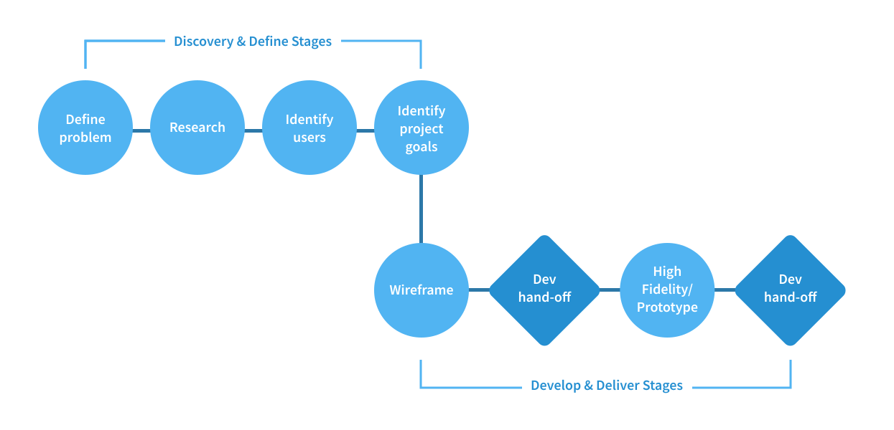

MediForm - Digitalized Healthcare
Role
User Experience Designer
Hackathon
DeltaHacks 2019
Duration
24 Hours
Brief
Mediform is a platform which allows patient to digitize important and frequently-used health information and share it effortlessly with their healthcare provider. A patient goes through a one-time setup process, when they input their personal health information on the app. Upon completion, they are able to present a QR code to their healthcare provider, which enables them to quickly pull up their medical data.
Our Design Process
I usually start off a project trying to understand the problem and the users. In the case of Mediform, we knew we wanted to tackle a specific problem already which members of the team have experienced personally.
The next plan of action was to better understand the users in order to make informed design choices, and we recorded the anecdotes of two users before prototyping.
Based off the UX double diamond model
Initial Research
We interviewed two individuals to collect anecdotes about their health care experiences to better understand the problem space and to better inform us of their frustrations.
Insights from Interview 1:
Full-time Consultant working in Downtown Toronto
•
Often visits walk-in clinics during work hours, i.e. on lunch breaks
•
Has limited time to spare and is inconvenienced that they must sign a form before even being placed on the existing waiting list.
Insights from Interview 2:
Immigrant parent with existing health conditions
•
Once went to the ER with a pressing heart issue with a slip of paper explaining his condition written in English by a friend
•
Nurses kept asking the same questions and he continued to give the slip of paper as his only form of communication.
•
Limited communication was a barrier to accessing healthcare.
User Story
From our research, we identified two distinct use cases for our product.
| As a: | Busy office worker |
|---|---|
| I want to: | quickly check in at the clinic |
| So that: | I can decrease wait times and get back to work as soon as possible |
| As a: | Immigrant that does not speak english |
|---|---|
| I want to: | be able to communicate my medical details and history |
| So that: | I can be treated quickly especially in emergency situations |
Project Goals
How might we:
Optimize form UX for effortless completion
Implement intuitive interface to create quickest check-in experience
Wireframes


While I normally like to ideate by iterating with flow charts and figure out the experience before moving on to screens, the time limits for a hackathon do not always allow for a detailed UX process. I started with wireframing, and ideated directly the frames.
High-Fidelity Screens
After handing off the low-fi frames to the devs so they can start front-end work, I quickly got started with high-fidelity screens.